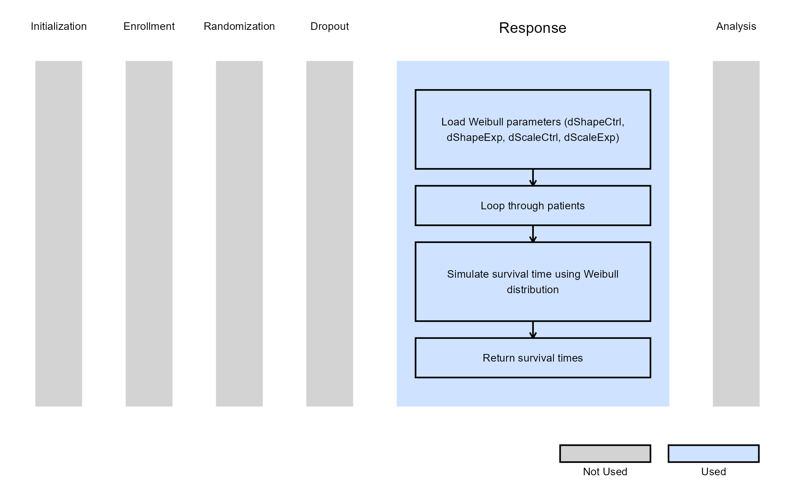
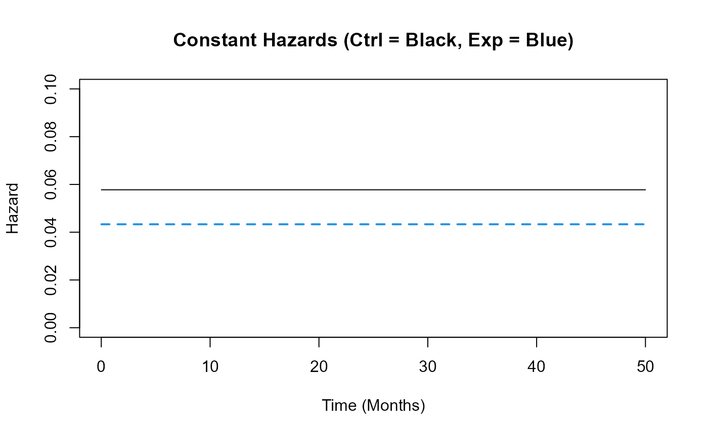
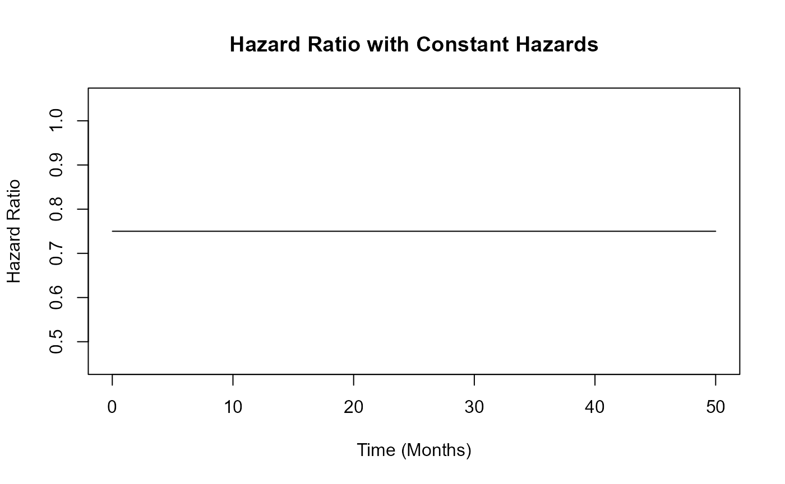
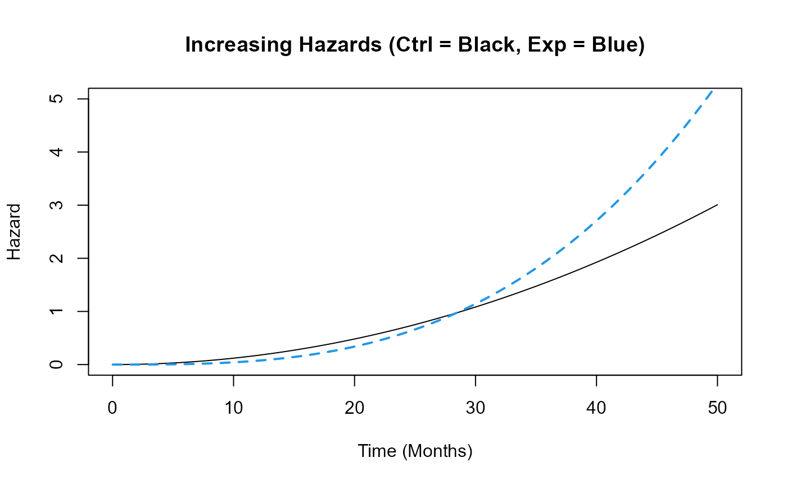
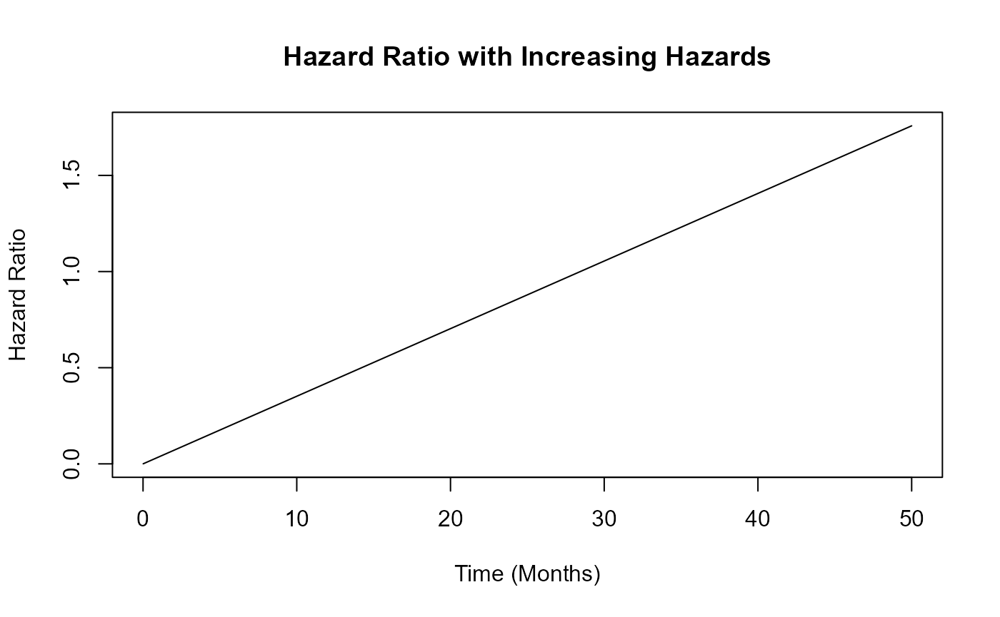
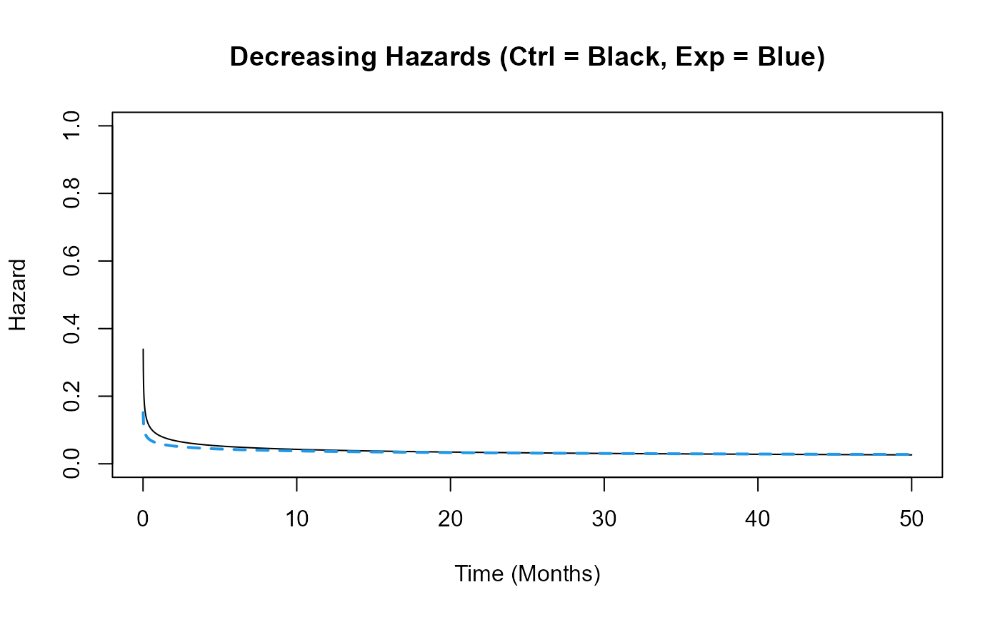
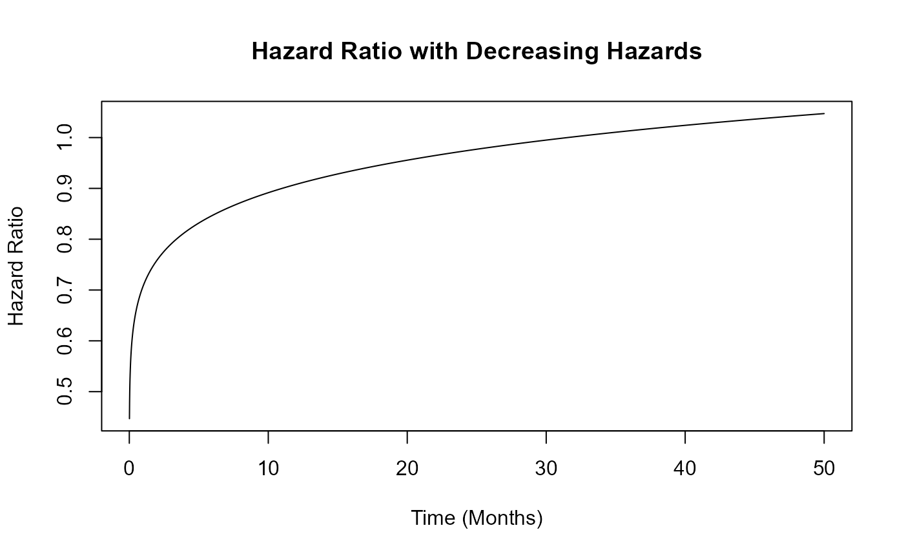
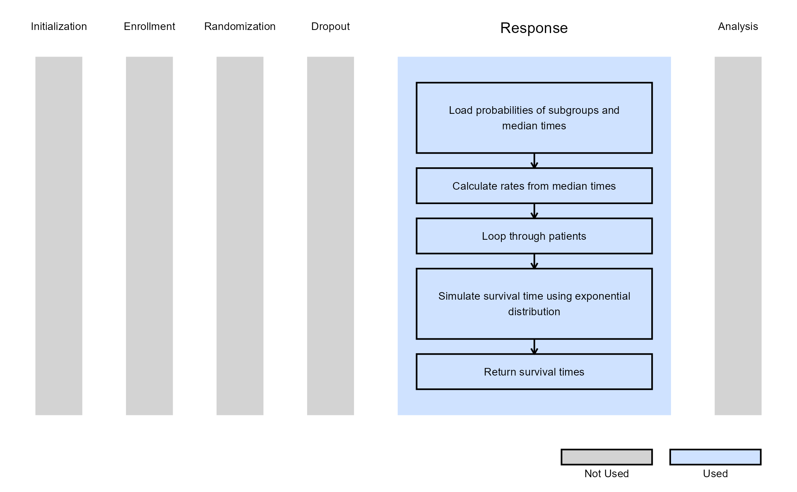
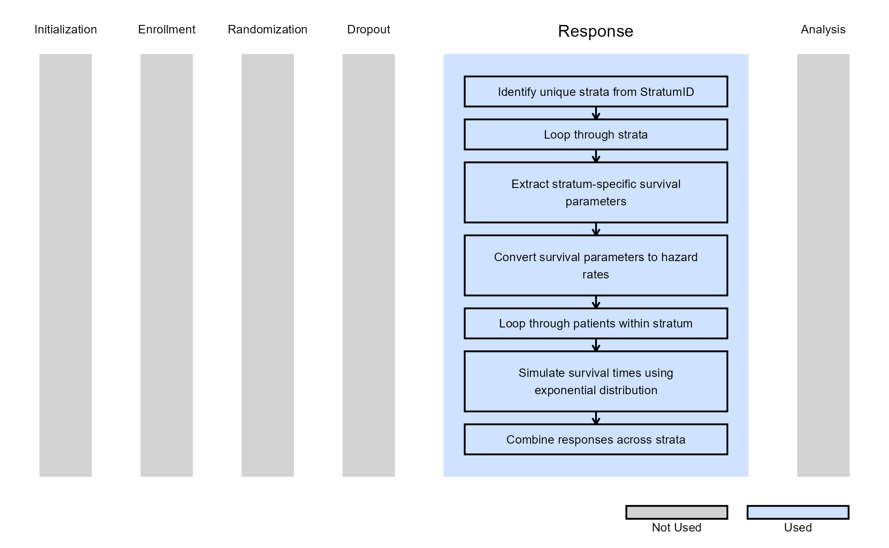

2 Arm, Time-To-Event Outcome - Patient Simulation
Valeria A. G. Mazzanti, J. Kyle Wathen, and Gabriel Potvin
January 09, 2026
2ArmTimeToEventOutcomePatientSimulation.RmdThis example is related to the Integration Point: Response - Time-to-Event Outcome. Click the link for setup instructions, variable details, and additional information about this integration point.
- Study objective: Two Arm Confirmatory
- Number of endpoints: Single Endpoint
- Endpoint type: Time-to-Event Outcome
- Task: Any
- Stratification turned on: For Example 3
Important: ArrivalTime is a new required parameter. Existing R scripts must be updated to include this parameter in the function definition, even if it is not used. See Integration Point: Response - Time-to-Event Outcome for more information.
Introduction
The following examples illustrate how to integrate new patient outcome simulation (response) capabilities into East Horizon or East using R functions in the context of a two-arm trial. In each example, the trial design includes a standard-of-care control arm and an experimental treatment arm, with patient outcomes modeled as time-to-event data.
Once CyneRgy is installed, you can load this example in RStudio with the following commands:
CyneRgy::RunExample( "2ArmTimeToEventOutcomePatientSimulation" )Running the command above will load the RStudio project in RStudio.
East Workbook: 2ArmTimeToEventOutcomePatientSimulation.cywx
RStudio Project File: 2ArmTimeToEventOutcomePatientSimulation.Rproj
In the R directory of this example you will find the following R files:
SimulatePatientSurvivalWeibull.R - This file provides an example R function to simulate patient time-to-event data from a Weibull distribution.
HelperFunctionsWeibull.R - This file contains functions to assist in the computation of Weibull parameters.
SimulatePatientSurvivalMixtureExponentials.R - This file provides an example R function to simulate patient data from a mixture of exponential distributions. The mixture is based on having any number of patient groups in the study where each group has a different exponential distribution for simulating the time-to-event from.
SimulatePatientOutcomeStratification.R - Contains a function named SimulatePatientOutcomeStratification that extends the standard TTE response generation to support stratification.
Example 1 - Simulation of Patient Time-To-Event Data from a Weibull Distribution
This example is related to this R file: SimulatePatientSurvivalWeibull.R
In this example, the R function SimulatePatientSurvivalWeibull is provided to simulate patient data with hazards and hazard ratios that change over time, allowing for an exploration of their impact on expected study power. Refer to the table below for the definitions of the user-defined parameters used in this example.
| User parameter | Definition |
|---|---|
| dShapeCtrl | Shape parameter of the Weibull distribution for the control arm. |
| dShapeExp | Shape parameter of the Weibull distribution for the experimental arm. |
| dScaleCtrl | Scale parameter of the Weibull distribution for the control arm. |
| dScaleExp | Scale parameter of the Weibull distribution for the experimental arm. |
The figure below illustrates where this example fits within the R integration points of Cytel products, accompanied by a flowchart outlining the general steps performed by the R code.

Example 1.1 – Constant Hazards
Assume that the difference in risk of death for patients in the control arm compared to the risk of death for patients in the experimental arm remains the same over time. The time to death or progression of patients is simulated from a Weibull distribution with the shape and scale for each arm provided in East Horizon or East and sent to R. Refer to the table below for the values of the user-defined parameters used in this example.
| User parameter | Value |
|---|---|
| dShapeCtrl | 1.0 |
| dShapeExp | 1.0 |
| dScaleCtrl | 17.31 |
| dScaleExp | 23.08 |
The scale parameters are calculated based on the median survival time for each arm. This example demonstrates that using the R function with these parameters produces the same results as simulating the data directly in East Horizon or East without an R function.

Example 1.2 – Increasing Hazards
This function assumes that the hazard of death or disease progression increases over time in both arms, but at different rates: the control arm’s hazard increases more slowly than that of the experimental arm. The time to death or progression is simulated using a Weibull distribution, with shape and scale parameters specified for each arm in East Horizon or East and then sent to R. Refer to the table below for the values of the user-defined parameters used in this example.
| User parameter | Value |
|---|---|
| dShapeCtrl | 3.0 |
| dShapeExp | 4.0 |
| dScaleCtrl | 13.56 |
| dScaleExp | 17.54 |
This example demonstrates how an R function can be used to simulate data in a way that differs from East Horizon’s or East’s default simulation approach.

Example 1.3 – Decreasing Hazards
This example is similar to the previous one, but here the function assumes that hazards decrease over time in both arms. However, the control arm’s hazard decreases at a slower rate than that of the experimental arm. The time to death or progression is simulated using a Weibull distribution, with shape and scale parameters specified for each arm in East Horizon or East and then sent to R. Refer to the table below for the values of the user-defined parameters used in this example.
| User parameter | Value |
|---|---|
| dShapeCtrl | 0.7 |
| dShapeExp | 0.8 |
| dScaleCtrl | 20.26 |
| dScaleExp | 25.30 |
This example demonstrates how an R function can be used to simulate data differently from East Horizon’s or East’s default simulation approach.

Notes about the Exponential and Weibull Distributions
In R, the Weibull distribution is defined by a shape parameter and a scale parameter , with a probability density function (PDF) given by:
Its corresponding hazard function is:
The Exponential distribution in R is parameterized by a rate parameter , with a PDF given by:
Its hazard function remains constant:
We can see that the Exponential distribution is a special case of the Weibull distribution, obtained by setting the shape parameter and the scale parameter .
Functions to assist in the computation of Weibull parameters can be found in HelperFunctionsWeibull.R.
Example 2 - Simulation of Patient Time-To-Event Data from a Mixture of Distributions
This example is related to this R file: SimulatePatientSurvivalMixtureExponentials.R
This example simulates patient data using a mixture of exponential distributions, allowing for multiple patient subgroups within the study. Each subgroup follows a distinct exponential distribution for modeling TTE, capturing variability in patient outcomes. Refer to the table below for the definitions of the user-defined parameters used in this example.
| User parameter | Definition |
|---|---|
| QtyOfSubgroups | Number of patient subgroups. |
| ProbSubgroup1 | Probability a patient is in subgroup 1. |
| MedianTTECtrlSubgroup1 | Median time-to-event for a patient in subgroup 1 that receives control treatment. |
| MedianTTEExpSubgroup1 | Median time-to-event for a patient in subgroup 1 that receives experimental treatment. |
| ProbSubgroup2 | Probability a patient is in subgroup 2. |
| MedianTTECtrlSubgroup2 | Median time-to-event for a patient in subgroup 2 that receives control treatment. |
| MedianTTEExpSubgroup2 | Median time-to-event for a patient in subgroup 2 that receives experimental treatment. |
| … | Probabilities and median time-to-event for additional subgroups follow the same format, incrementing the subgroup number (e.g., ProbSubgroup3, MedianTTECtrlSubgroup3, MedianTTEExpSubgroup3, etc.). |
ProbSubgroup<QtyOfSubgroups> |
Probability a patient is in the final subgroup.
QtyOfSubgroups should be replaced by the number of
subgroups. |
MedianTTECtrlSubgroup<QtyOfSubgroups> |
Median time-to-event for a patient in the final subgroup that
receives control treatment. QtyOfSubgroups should be
replaced by the number of subgroups. |
MedianTTEExpSubgroup<QtyOfSubgroups> |
Median time-to-event for a patient in the final subgroup that
receives experimental treatment. QtyOfSubgroups should be
replaced by the number of subgroups. |
The figure below illustrates where this example fits within the R integration points of Cytel products, accompanied by a flowchart outlining the general steps performed by the R code.

Example 2.1 - No Group Difference
We are using two subgroups. Both subgroups have the same Hazard Ratio (HR), with same median TTE, i.e., subgroup has no impact. Refer to the table below for the values of the user-defined parameters used in this example.
| User parameter | Value |
|---|---|
| QtyOfSubgroups | 2 |
| ProbSubgroup1 | 0.25 |
| MedianTTECtrlSubgroup1 | 12 |
| MedianTTEExpSubgroup1 | 16 |
| ProbSubgroup2 | 0.75 |
| MedianTTECtrlSubgroup2 | 12 |
| MedianTTEExpSubgroup2 | 16 |
Example 2.2 - HR = 0.75
25% of patients are in subgroup 1, with a median TTE lower than in group 2. Both subgroups have an . Refer to the table below for the values of the user-defined parameters used in this example.
| User parameter | Value |
|---|---|
| QtyOfSubgroups | 2 |
| ProbSubgroup1 | 0.25 |
| MedianTTECtrlSubgroup1 | 9 |
| MedianTTEExpSubgroup1 | 12 |
| ProbSubgroup2 | 0.75 |
| MedianTTECtrlSubgroup2 | 12 |
| MedianTTEExpSubgroup2 | 16 |
Example 2.3 - Group 1 HR = 0.8 (Prob = 0.25), Group 2 HR = 0.75
25% of patients are in subgroup 1 with an . Subgroup 2 has an . Refer to the table below for the values of the user-defined parameters used in this example.
| User parameter | Value |
|---|---|
| QtyOfSubgroups | 2 |
| ProbSubgroup1 | 0.25 |
| MedianTTECtrlSubgroup1 | 9 |
| MedianTTEExpSubgroup1 | 11.25 |
| ProbSubgroup2 | 0.75 |
| MedianTTECtrlSubgroup2 | 12 |
| MedianTTEExpSubgroup2 | 16 |
Example 2.4 - Group 1 HR = 0.8 (Prob = 0.4), Group 2 HR = 0.75
40% of patients are in subgroup 1 with an . Subgroup 2 has an . Refer to the table below for the values of the user-defined parameters used in this example.
| User parameter | Value |
|---|---|
| QtyOfSubgroups | 2 |
| ProbSubgroup1 | 0.4 |
| MedianTTECtrlSubgroup1 | 9 |
| MedianTTEExpSubgroup1 | 11.25 |
| ProbSubgroup2 | 0.75 |
| MedianTTECtrlSubgroup2 | 12 |
| MedianTTEExpSubgroup2 | 16 |
The intent of the example is to illustrate the impact that the patient subgroup may have on the operating characteristics of the design.
Example 3 - Response Generation with Stratification
This example is related to this R file: SimulatePatientOutcomeStratification.R
This example illustrates how to customize the response generation
when turning on Stratification in East Horizon. Unlike the
previous examples, where a single set of survival parameters applies to
all patients in an arm, this example allows different survival
characteristics for each stratum, while still supporting two arms.
For each stratum, the survival parameters provided in East Horizon are converted into arm-specific hazard rates. Patient survival times are then simulated independently within each stratum using an Exponential distribution. This approach enables realistic modeling of heterogeneous patient populations where baseline risk differs across strata.
The behavior of the response simulation depends on the value selected for Survival Method in East Horizon:
- If
SurvMethod = 1(Hazard Rates), the hazard rates provided for each stratum and arm are used directly to simulate patient survival times. - If
SurvMethod = 2(Cumulative % Survival), the cumulative survival value at the specified time point is converted into a constant hazard rate for each stratum and arm. - If
SurvMethod = 3(Median Survival Times), the median survival time is converted into a hazard rate using .
The stratum ID (StratumID) input parameter is a vector
indicating the stratum assignment for each subject. Subjects sharing the
same value belong to the same stratum.
The figure below illustrates where this example fits within the R integration points of Cytel products, accompanied by a flowchart outlining the general steps performed by the R code.
